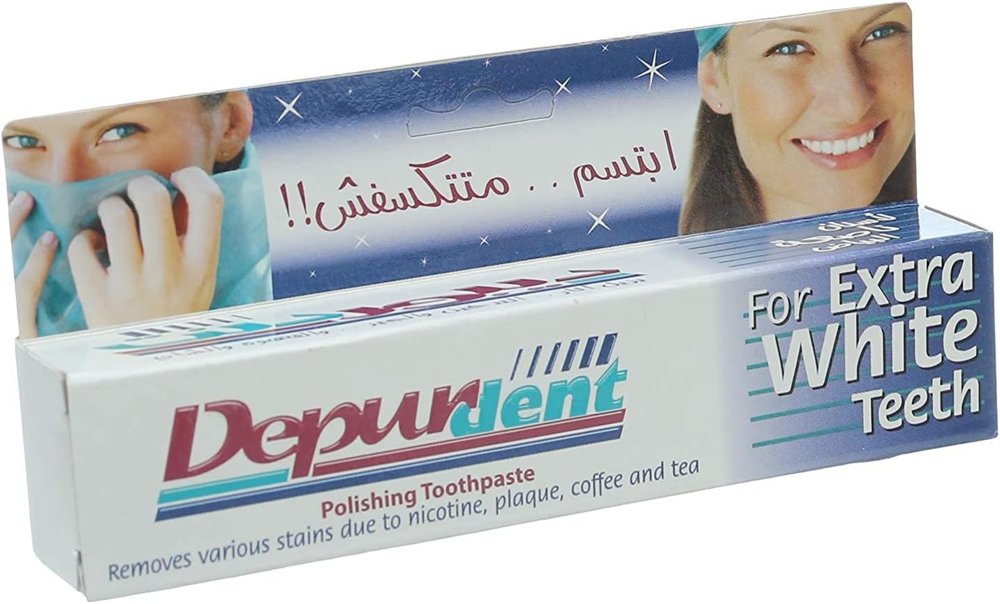

يجب ان نقوم بغسيل الاسنان بحد ادنى مرتين يوميا عن الاستيقاظ و قبل النوم و يفضل ان نضيف عليهم مرة بعد كل وجبة من اجل الحصول على افضل نتيجة ممكنة
نقوم بتحريك الفرشاة فى اتجاه واحد و بحركة لطيفة لا تسبب تهيج او جرح للثة
نقوم بوضع الفرشاه على طرف الاسنان القريب من اللثة ثم تحريكها بعيدا عن اللثه فيكون كالتالى:
للفك السفلى حركة الفرشاة من الاسفل للاعلى
للفك العلوى تكون حركة الفرشاة من الاعلى للاسفل
هذه الحركة تكون على سطح الاسنان الامامى و كذلك السطح الداخلى الملامس لللسان و سقف الحلق
مدة غسيل الاسنان تكون فى المتوسط دقيقين للتاكد من الوصول الى كل اسطح الاسنان كما موضح بالفيديو التالى:
يفضل عدم المضمضة بعد استخدام معجون الاسنان سواء بماء او بمضمضة علاجية و ذلك للحصول على الفائدة المطلوبة من الفلورايد الموجود فى معجون الاسنان حيث انه يمنع التسوس من التكون و يوقف تكون الجير على الاسنان
الفرشاة المستخدمة تكون متوسطة medium tooth brush الا اذا نصح الطبيب المعالج باستخدام نوع اخر
استخدام خيط الاسنان فى الاماكن اللتى ينحشر فيها الطعام كما موضح بالفيديو:
غسيل اللسان بالفرشاة لأزالة طبقة الفطريات المتكونة عليها و تحسين رائحة الفم
يجب الانتظار فترة من ثلث لى نصف ساعة بعد الانتهاء من تناول الطعام و بل غسيل الاسنان و ذلك حتى يقوم اللعاب بمعادلة الاحماض الناتجة عن البكتيريا بالفم و الطعام الذى تم تناوله
يمكن استخدام اى نوع معجون اسنان للحصول على نفس النتيجة
و لكن هناك بعض انواع معجون الاسنان التى تسبب مشاكل فى الاسنان مثل:
معجون الاسنان المبيض للاسنان على اختلاف الشركات لانه مع الاستخدام لفترات طويلة يسبب تصبغ الاسنان و اصفرارها

اسوأ معجون اسنان موجود فى السوق المصرى لا انصح بشرائه او اسنخدامه لأنه يسبب تاكل طبقة المينا و حساسية الاسنان و انحسار اللثة هو depurdent
بعض المنتجات الاخرى التى تسبب مشاكل فى الاسنان مثل وصفات تبيض الاسنان المنتشرة على وسائل التواصل الاجتماعى قد تسبب زيادة سرعة تكون التسوس لاحتوائها على احماض مثل الخل و مواد كاشطة مثل الفحم و غيره
اخطاء شائعة عند غسيل الاسنان:
غسيل الاسنان بعنف
استخدام فرشاة غير مناسبة سواء قاسية او حجمها غير مناسب
عدم تغيير الفرشاة بشكل دورى
عدم غسيل الاسنان لوقت كافى
عدم غسيل سطح اللسان
عدم غسيل جميع اسطح الاسنان
عدم استخدام الطريقة المناسبة لنوع اللثة الخاص بالمريض فى غسيل الاسنان
استخدام النوع الخاطئ من معجون الاسنان
غسيل الاسنان مباشرة بعد الانتهاء من تناول الطعام
غسيل الاسنان بشكل اكثر من اللازم
عدم استخدام خيط الاسنان فى الاماكن اللتى ينحشر فيها الطعام